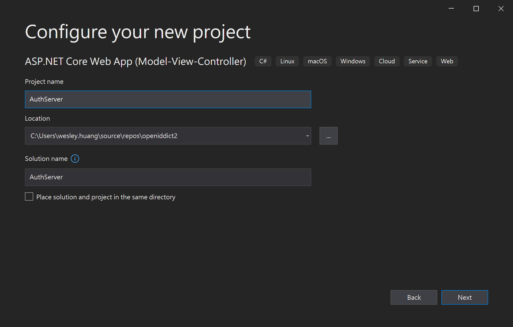
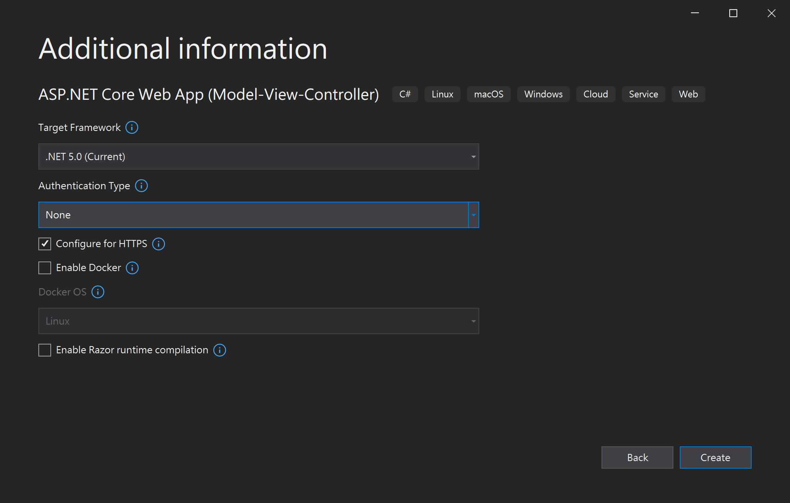
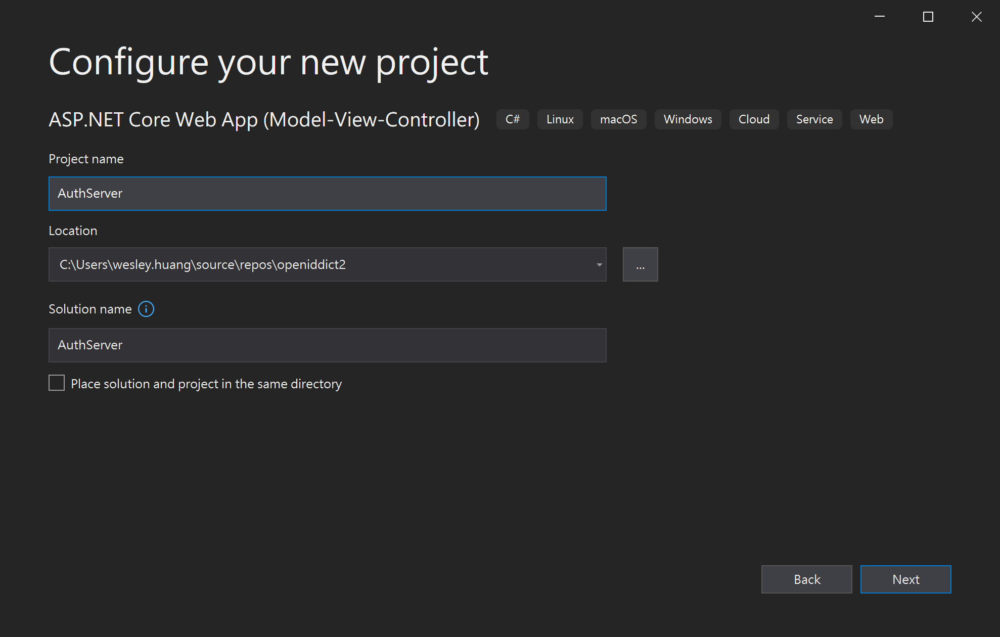
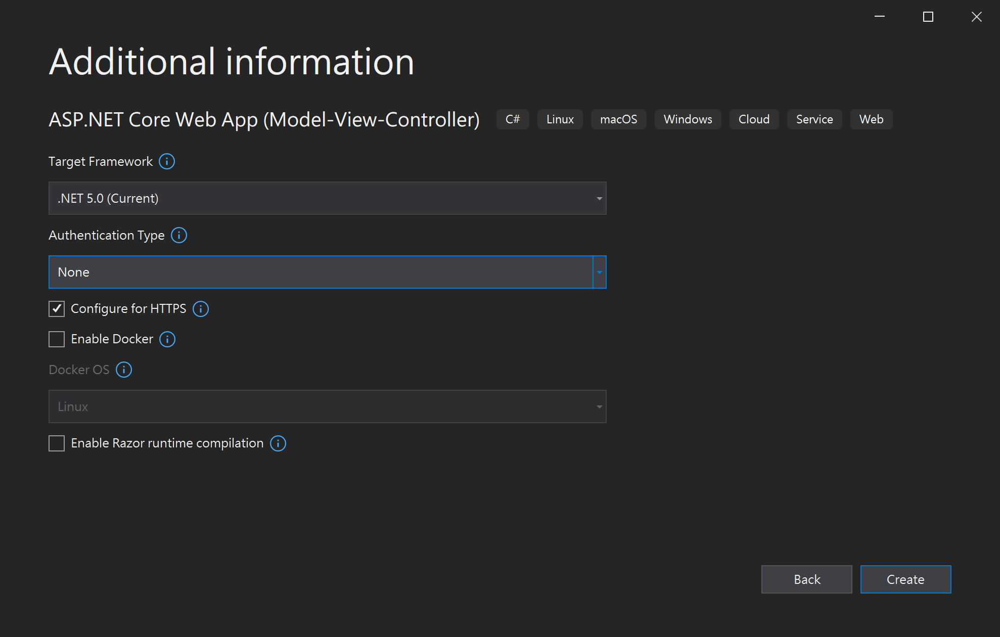
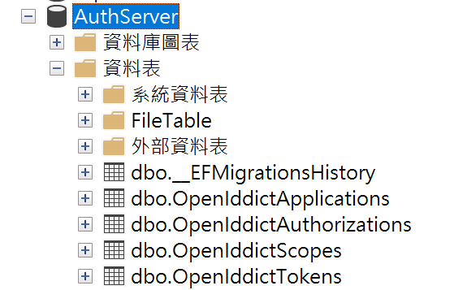
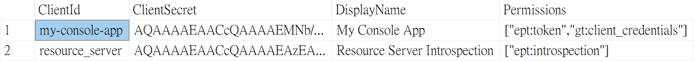
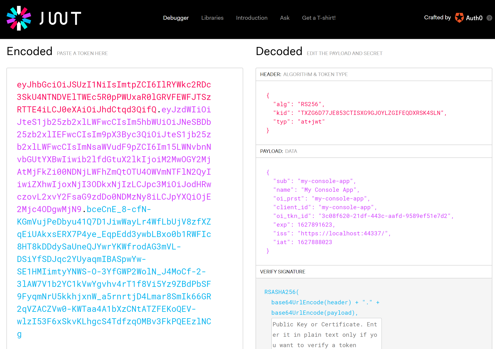

on
使用 OpenIddict 建立一個支援 Client Credentials Grant 的 Authentication Server 來保護你的 Web API - Part 1
本篇內容主要講解如何使用 OpenIddict 來建立一個支援 Client Credentials Grant 的 Authentication Server 來保護你的 Web API。
內容將會分成兩個部分，第一部分包含方案說明，以及建立 Authentication Server 專案，第二部分則會建立一個 Resource Server (Web API) 專案，及一個 Console App 作為 Client。
方案說明
我們這裡會建立一個方案，裡面包含了 Auth Server, Resource Server 及 Client App，作法如下:
- 建立一個 Auth Server
- Auth Server 需支援 client credentials grant
- Auth Server 需要定義一個 client
- client 可以使用 client credentials grant
- Auth Server 需要有一個 introspection endpoint，供 Resource Server 呼叫，作為驗證 access token 用
- 建立一個 Resource Server (Web API)
- 包含一個 endpoint - WeatherForecast (Web API 專案的內建範例)
- 需要 Auth Server 發出的 access token 才能存取
- 建立一個 Console App 做為 Client
- Client App 會向 Auth Server 取得 access token
- Client App 會呼叫 Resource Server 取得資料
Auth Server
1. 開新專案
首先，先開一個新的 ASP.NET Core MVC 專案，專案名稱為 AuthServer，Authentication Type 選擇 None。
 



2. 安裝 OpenIddict 套件
這個步驟需要安裝四個 NuGet 套件，分別為：
- Microsoft.EntityFrameworkCore.SqlServer 5.0.8
- Microsoft.EntityFrameworkCore.Tools 5.0.8
- OpenIddict.AspNetCore 3.1.0
- OpenIddict.EntityFrameworkCore 3.1.0
版本編號為撰文當下的最新版本
NuGet package 安裝方式相信大家都很熟悉了，就不另外講解
3. 建立 DbContext
在專案底下建立一個名為 Data 的資料夾，在資料夾中建立一個 AppDbContext.cs，內容如下：
using Microsoft.EntityFrameworkCore;
namespace AuthServer.Data
{
public class AppDbContext : DbContext
{
public AppDbContext(DbContextOptions<AppDbContext> options)
: base(options)
{
}
}
}
4. 加入連線字串
開啟 appsettings.json ，加入 SQL 連線字串，這裡用 LocalDB 為範例。
{
"ConnectionStrings": {
"DefaultConnection": "Server=(localdb)\\mssqllocaldb;Database=AuthServer;Trusted_Connection=True;MultipleActiveResultSets=true"
},
// ...
}
5. 修改 Startup.cs
這一步，我們要在 Startup.cs 中加入 DbContext 以及 OpenIddict 的相關設定。
開啟 Startup.cs 並做以下修改。
using AuthServer.Data;
using Microsoft.EntityFrameworkCore;
public void ConfigureServices(IServiceCollection services)
{
services.AddDbContext<AppDbContext>(options =>
{
options.UseSqlServer(Configuration.GetConnectionString("DefaultConnection"));
options.UseOpenIddict();
});
//OpenIddict
services.AddOpenIddict()
.AddCore(options =>
{
options.UseEntityFrameworkCore()
.UseDbContext<AppDbContext>();
})
.AddServer(options =>
{
// 允許 auth server 支援 client credentials grant
options.AllowClientCredentialsFlow();
options
// 設定取得 access token 的 endpoint
.SetTokenEndpointUris("/connect/token")
// 設定 introspection endpoint
.SetIntrospectionEndpointUris("/connect/introspect")
;
options
// 產生開發用的加密金鑰，production 建議用存在本機的 X.509 certificates
.AddEphemeralEncryptionKey()
.AddEphemeralSigningKey()
// 停用 access token 加密，production 不建議使用
.DisableAccessTokenEncryption()
;
options
.UseAspNetCore()
.EnableTokenEndpointPassthrough()
;
});
services.AddControllersWithViews();
}
接著在 Configure 中，app.UseRouting() 後面加入下面程式片段
app.UseAuthentication();
6. EF Migration
點選 Tools > NuGet Package Manager > Package Manager Console，接著在 Package Manager Console 中輸入以下指令：
Add-Migration AddOpenIddictTables
Update-Database
完成之後，可以使用 SSMS 開啟資料庫，應該可以看到已經建立好四個 OpenIddict 的資料表。

7. 加入 Token Endpoint
在 Startup.cs 中，我們有設定一個取得 access token 的 endpoint，現在要將它實作出來。
在 Controllers 資料夾中，新增 AuthorizationController.cs，程式碼如下：
using Microsoft.AspNetCore;
using Microsoft.AspNetCore.Mvc;
using Microsoft.IdentityModel.Tokens;
using OpenIddict.Abstractions;
using OpenIddict.Server.AspNetCore;
using System;
using System.Security.Claims;
using System.Threading.Tasks;
using static OpenIddict.Abstractions.OpenIddictConstants;
namespace AuthServer.Controllers
{
public class AuthorizationController : Controller
{
private readonly IOpenIddictApplicationManager _applicationManager;
public AuthorizationController(
IOpenIddictApplicationManager applicationManager
)
{
_applicationManager = applicationManager;
}
[HttpPost("~/connect/token"), Produces("application/json")]
public async Task<IActionResult> Exchange()
{
var request = HttpContext.GetOpenIddictServerRequest() ??
throw new InvalidOperationException("The OpenID Connect request cannot be retrieved.");
if (request.IsClientCredentialsGrantType())
{
var application = await _applicationManager.FindByClientIdAsync(request.ClientId);
if (application == null)
{
throw new InvalidOperationException("The application details cannot be found in the database.");
}
var identity = new ClaimsIdentity(TokenValidationParameters.DefaultAuthenticationType, Claims.Name, Claims.Role);
// 將 claim (sub=clientid) 加到 access token, id_token
identity.AddClaim(Claims.Subject, await _applicationManager.GetClientIdAsync(application),
Destinations.AccessToken, Destinations.IdentityToken);
// 將 claim (name=client display name) 加到 access token, id_token
identity.AddClaim(Claims.Name, await _applicationManager.GetDisplayNameAsync(application),
Destinations.AccessToken, Destinations.IdentityToken);
var principal = new ClaimsPrincipal(identity);
return SignIn(principal, OpenIddictServerAspNetCoreDefaults.AuthenticationScheme);
}
throw new InvalidOperationException("The specified grant type is not supported.");
}
}
}
8. 加入測試用的 Client 設定
由於我們並沒有後台可以管理 Client 應用程式，所以我們需要透過程式碼來加入相關的設定。
新增一個 TestClient.cs，並加入以下程式碼：
using AuthServer.Data;
using Microsoft.Extensions.DependencyInjection;
using Microsoft.Extensions.Hosting;
using OpenIddict.Abstractions;
using System;
using System.Threading;
using System.Threading.Tasks;
using static OpenIddict.Abstractions.OpenIddictConstants;
namespace AuthServer
{
public class TestClient : IHostedService
{
private readonly IServiceProvider _serviceProvider;
public TestClient(IServiceProvider serviceProvider)
{
_serviceProvider = serviceProvider;
}
public async Task StartAsync(CancellationToken cancellationToken)
{
using var scope = _serviceProvider.CreateScope();
var context = scope.ServiceProvider.GetRequiredService<AppDbContext>();
await context.Database.EnsureCreatedAsync(cancellationToken);
var manager = scope.ServiceProvider.GetRequiredService<IOpenIddictApplicationManager>();
var scopeManager = scope.ServiceProvider.GetRequiredService<IOpenIddictScopeManager>();
if (await manager.FindByClientIdAsync("my-console-app", cancellationToken) is null)
{
await manager.CreateAsync(new OpenIddictApplicationDescriptor
{
// Client Id
ClientId = "my-console-app",
// Client Secret
ClientSecret = "388D45FA-B36B-4988-BA59-B187D329C207",
DisplayName = "My Console App",
Permissions =
{
// 允許使用 token endpoint
Permissions.Endpoints.Token,
// 允許使用 client credentials flow
Permissions.GrantTypes.ClientCredentials,
}
}, cancellationToken);
}
//introspection client
if (await manager.FindByClientIdAsync("resource_server") == null)
{
var descriptor = new OpenIddictApplicationDescriptor
{
ClientId = "resource_server",
ClientSecret = "846B62D0-DEF9-4215-A99D-86E6B8DAB342",
DisplayName = "Resource Server Introspection",
Permissions =
{
Permissions.Endpoints.Introspection
}
};
await manager.CreateAsync(descriptor);
}
}
public Task StopAsync(CancellationToken cancellationToken) => Task.CompletedTask;
}
}
上面的程式中，我們一共建立了兩個 ClientId。
一個是 my-console-app，是給我們的 Client 使用，從 permission 設定中可以看到，這個 Client 允許使用 token endpoint 取得 access token，且允許使用的認證流程為 client credentials grant。
另一個則是 resource_server，是給的 resource server 驗證 access token 使用，所以它的 permission 就只有 introspection endpoint。當 client 拿著 access token 向 resource server 要求存取資料時，resource server 就會透過這組 clientid 來向 auth server 要求驗證 access token 的有效性。
再完成 TestClient.cs 之後，需要將其加入 Startup.cs，這樣在網站執行後，就可以自動在資料庫中建立 client 的設定。
請將下面程式片段加在 Startup.cs 中的 ConfigureServices 的最後。
services.AddHostedService<TestClient>();
完成之後，執行程式，檢查 OpenIddictApplications 這個資料表，應該可以看到兩個 Applications 的設定。

9. 測試 Authentication Server
目前我們已經完成 AuthServer，我們可以用 Rest Client for Visual Studio Code，做一下簡單的測試
Request
POST https://localhost:44337/connect/token HTTP/1.1
Content-Type: application/x-www-form-urlencoded
grant_type=client_credentials
&client_id=my-console-app
&client_secret=388D45FA-B36B-4988-BA59-B187D329C207
Response
{
"access_token": "eyJhbGciOiJSUzI1NiIsImtpZCI6IlRYWkc2RDc3SkU4NTNDVElTWEc5R0pPWUxaR0lGR....",
"token_type": "Bearer",
"expires_in": 3599
}
你可以將 access_token 複製下來，並利用 jwt.io，來觀察 access_token 所包含的資訊

結論
在這個部分，我們已經將 AuthServer 完成了，接下來第二部分，將會繼續完成 Resource Server (Web API) 及 Client 的 Console 應用程式。